Học tập
Data Science
Chuyên ngành tại VinUniversity, đồng thời học minor Economics.
Data Science | Leadership | Apps and Websites
Sinh viên Data Science tại VinUniversity, học minor Economics. Hiện là Head of Academic Affairs trong Student Council, xây dựng apps và websites, đồng thời cũng tham gia research với vai trò Research Assistant.
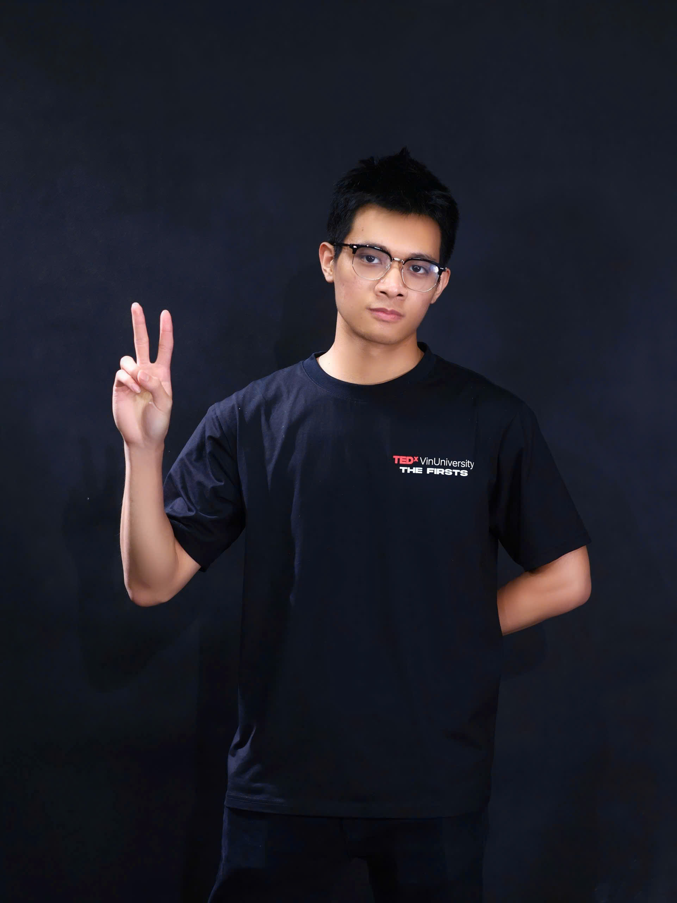
Học tập
Chuyên ngành tại VinUniversity, đồng thời học minor Economics.
Lãnh đạo
Lãnh đạo mảng học vụ sinh viên, phản hồi chính sách, xử lý case và peer advising.
Xây dựng
Biến ý tưởng thành sản phẩm số thông qua web work và app building.
Danh hiệu
President's List và Champion of Change, trong đó President's List là giải thưởng danh giá nhất dành cho sinh viên VinUni.
Student Council
Dẫn dắt Academic Affairs Department và phối hợp với SAM, Registrar, AQA cùng Program Directors trong các vấn đề học vụ, student cases và phản hồi chính sách ở cấp liên trường.
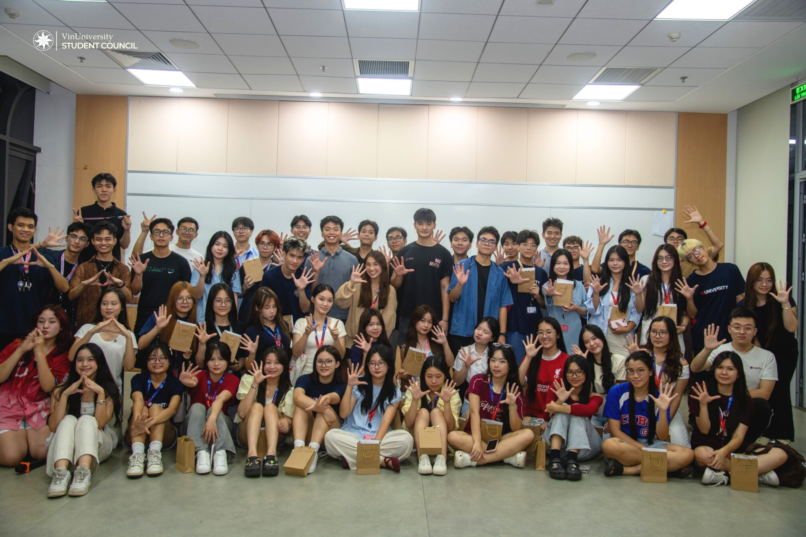
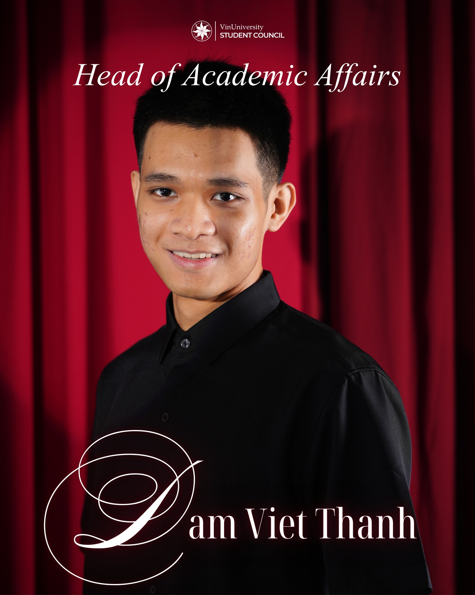
TEDx VinUniversity
Tham gia Content Department của ReThink, TEDx VinUniversity: xây dựng chủ đề, phát triển nội dung, nghiên cứu speaker, làm invitation work và hỗ trợ execution cho The Firsts.
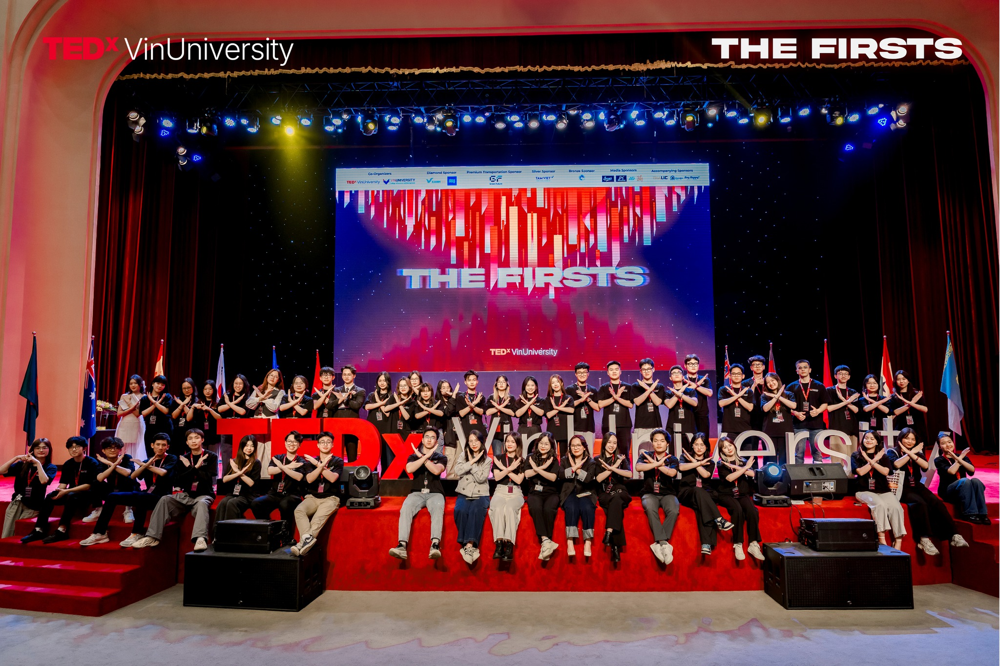
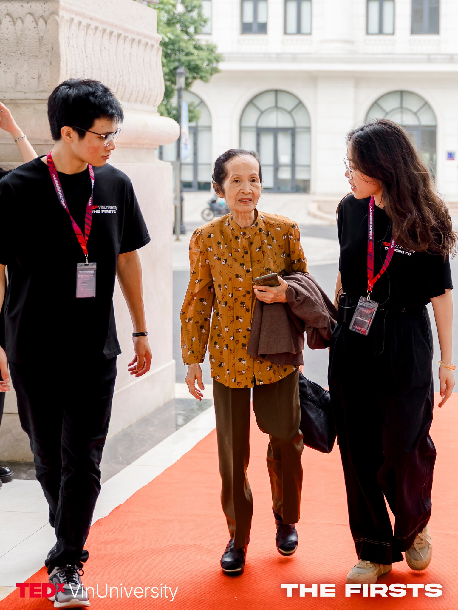
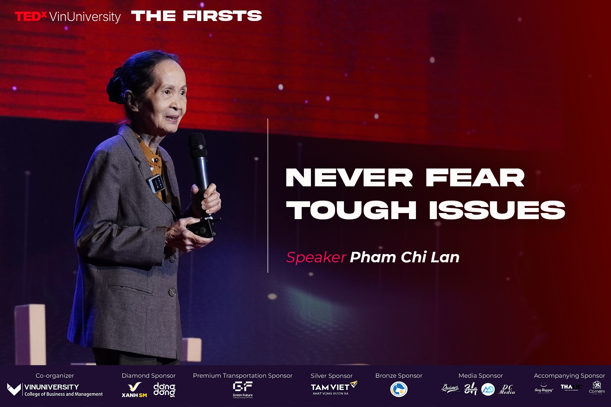
Leadership Bootcamp
Hỗ trợ triển khai Leadership Bootcamp với vai trò Returning Leader, mentoring bốn student teams và củng cố tinh thần servant leadership.
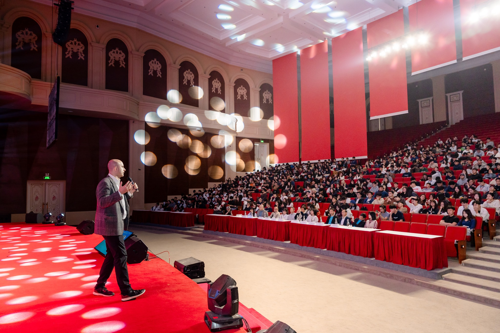
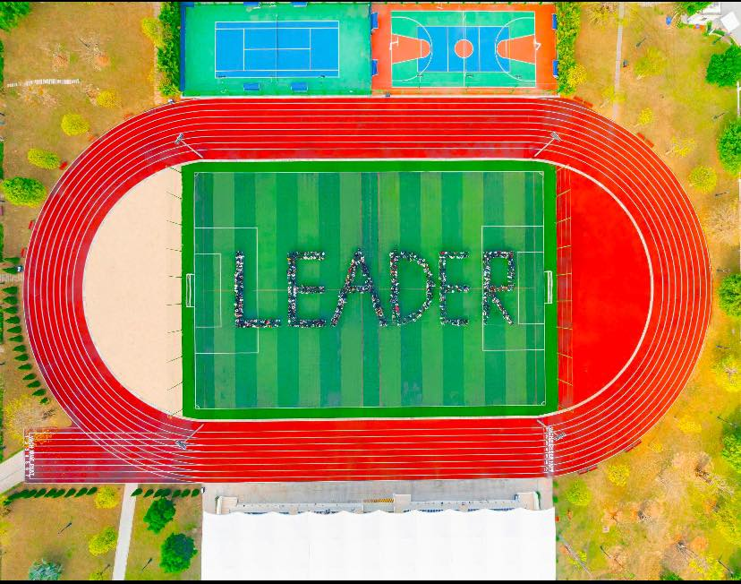
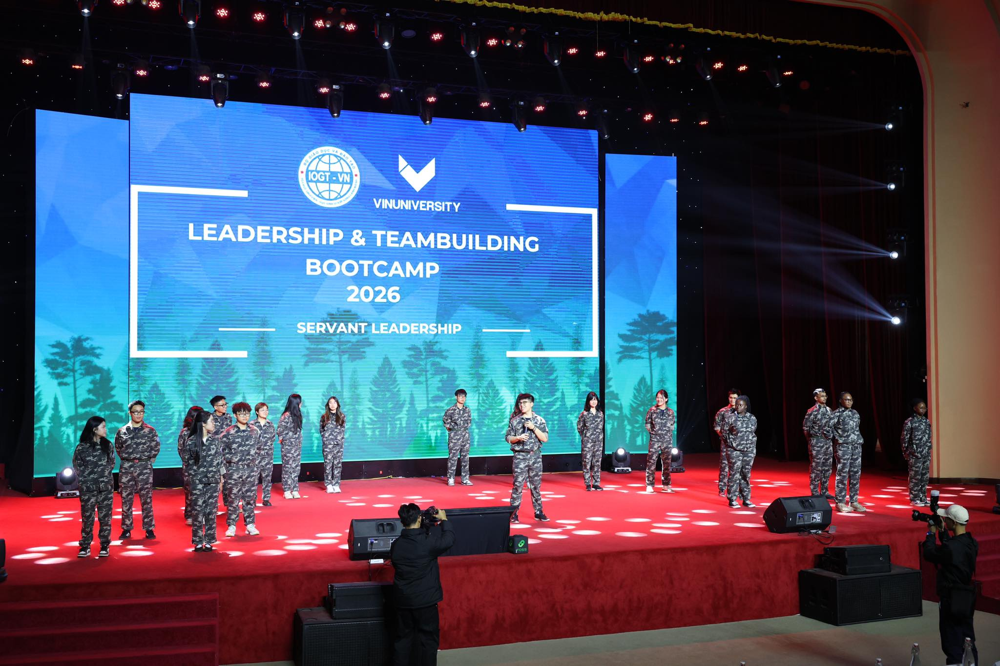
Tim Tebow Night to Shine
Phần này được giữ riêng vì thuộc một mạch hoạt động nhân đạo và phục vụ cộng đồng khác, gắn với Samaritan's Purse và Night to Shine.
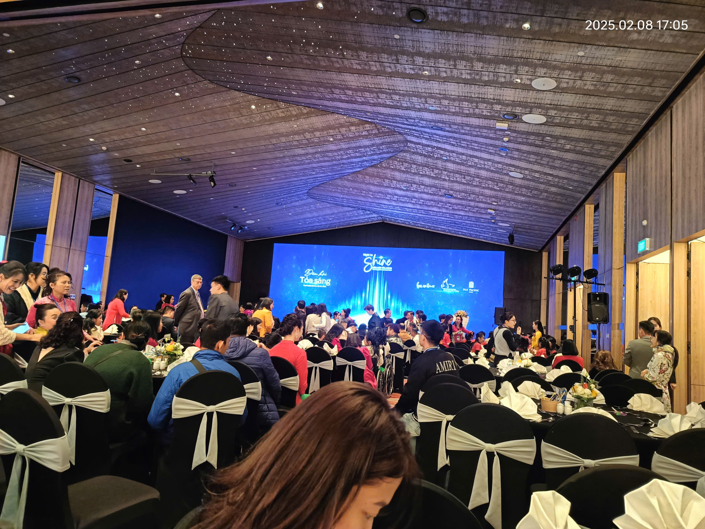
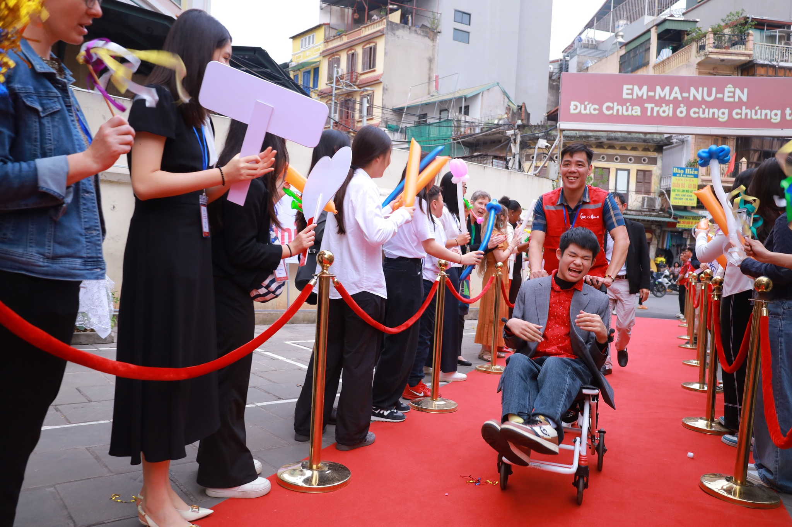
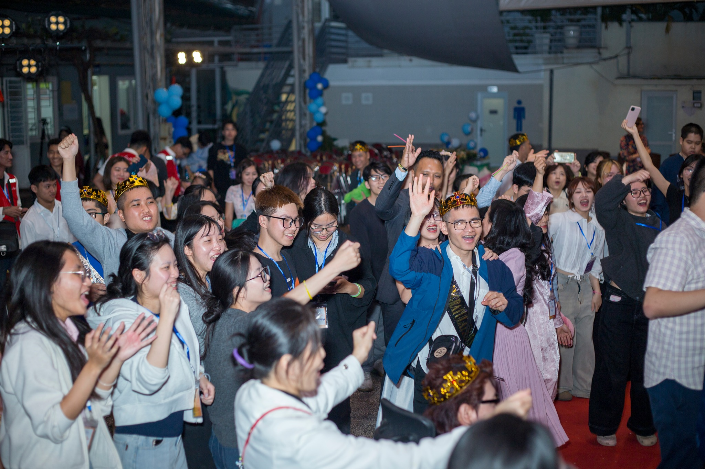